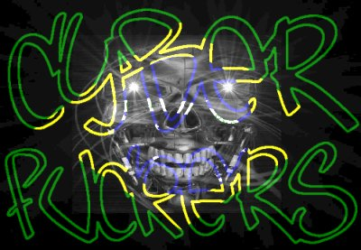
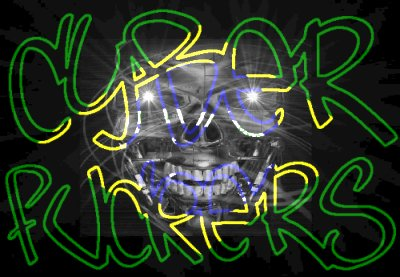

Isso eh justo?!

Sobre a paz mundial

Isso eh justo?!
O mundo hoje não é a mesma coisa que será amanhã, esta é a primeira idéia, e temos
que ter consciência disso. A segunda principal idéia é que para que amanhã o mundo
possa ser melhor do que é hoje, isso depende de nós, que somos jovens hoje e temos que
olhar o péssimo exemplo de exploração e preconceito que as grandes potências mundiais
estão dando e aprender com eles que isso não dá certo.
As guerras mundiais serviram apenas para definir quem
são os ricos e quem são os pobres, o que aumenta a desigualdade entre povos, e dentro
das nações também.
O que me deixa mal é pensar que cada país tem sua cultura, seu folclore, sua música,
seus artistas, e que todos, o mundo inteiro, poderíamos usufruir disso para o bem, nos
unir para ser mais fortes, e depois de montar esta estrutura buscar algo (ou alguém) fora
daqui que talvez pudesse ter-nos como exemplo para seu próprio desenvolvimento.
O fato é que as
pessoas não compreendem isso, os grandes líderes não buscam isso, é por esta causa que
estamos cada dia mais decadentes, é por esta causa que a humanidade está cada dia mais
desumana.
Isso precisa mudar, as pessoas têm que compreender que quanto mais guerras, conflitos e
quanto mais a violência crescer entre as nações, pior vai ser o mundo. Para o Bill
Clinton não há problema, ele já tem filhos, e se o mundo continuar como está, os
filhos dele serão felizes a vida inteira. Mas e nós, e o povo, e quem hoje é
adolescente? E a juventude de hoje? Cresceremos vendo guerra? Será que é isso que nossos
pais querem para seus netos e bisnetos? Será que é isso que queremos para nossos filhos?
Sim, talvez a mudança demore mais do que uma ou duas
gerações, mas o que o povo precisa é saber que tem que começar agora, hoje, o mais
rápido possível, porque talvez não dê tempo de salvar ninguém.
Bomba atômica no Paquistão, isso é um absurdo. E os
homens se irritam por um simples acordo não cumprido, se irritam por não ter conseguido
faturar naquele mês tudo o que esperavam. E então, bum!, e já era tudo. O mundo está
correndo um risco sério.
Cada país quer
dominar mais, quer estabelecer acordos comerciais que aparentemente beneficiam a todos,
mas que na realidade o que acontece é que sempre uns ganham e outros perdem, enquanto
poderíamos simplesmente dividir tudo por igual, e garantir a sobrevivência de todos os
povos.
Não podemos mais nos resignar e ficar trancados dentro de condomínios, porque cada dia a
violência está chegando mais perto de nós, de nossa família e nossos amigos.
Hoje, a culpa é de quem viveu no passado e de quem vive
hoje. Mas se o mundo continuar assim, amanhã a culpa vai ser totalmente nossa.
" os homens inúteis sempre
se julgam importantes, e escondem toda a sua incompetência atrás da autoridade"
" Na dúvida, o Guerreiro prefere enfrentar a derrota
e depois curar suas feridas porque sabe que - se fugir - está dando ao seu agressor um
poder maior do que ele merece"

www.clickfome.com.br
Por favor, visitem estes sites:
Greetz to.:
TDK, inferno.br (kd vcs? "a luta continua"), OHB, einstein, Vugo, Mr. Delete,
HNB, securenet, MOD, crime boys etc...

"Nemo me impune
lacessit"
"In pace requiescat"